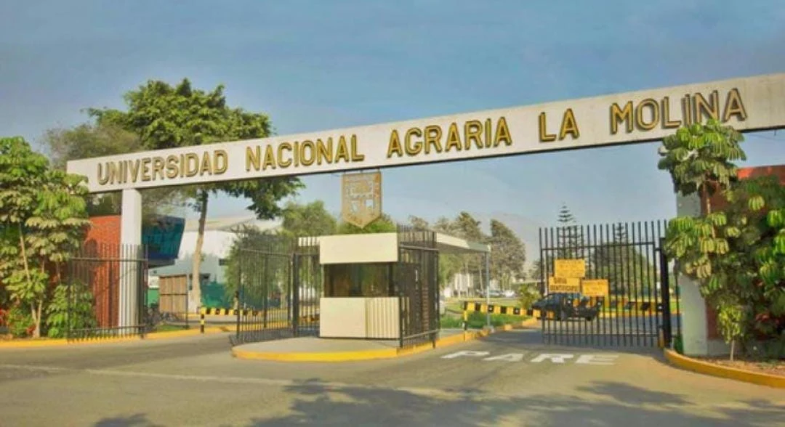
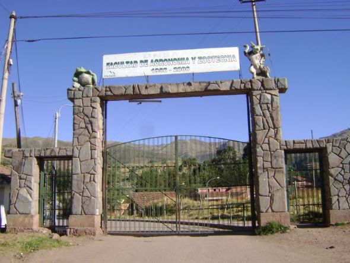

Hidrofísica Experimental
Reemplazo de funciones de pedotransferencia genéricas por curvas pF medidas en Ollas de Richards (0.1 a 15 bar) y ajuste de van Genuchten sobre núcleos inalterados.
Proyecto ENSO-DSSAT-ANDES: mitigación de riesgos agroclimáticos mediante modelamiento ecofisiológico (DSSAT v4.8), caracterización hidrofísica de suelos (Ollas de Richards) y fenotipado proximal IoT en K'ayra (Cusco) y La Molina (Lima).
Las fases cálida (El Niño) y fría (La Niña) generan impactos asimétricos: sequías y heladas en la sierra andina (papa) y estrés térmico e hídrico en la costa central (maíz), provocando pérdidas de hasta 50% y deterioro del valor nutricional.
Reemplazo de funciones de pedotransferencia genéricas por curvas pF medidas en Ollas de Richards (0.1 a 15 bar) y ajuste de van Genuchten sobre núcleos inalterados.
Monitoreo continuo y no destructivo del dosel con 8 fenocámaras ESP32-CAM, ceptómetros AccuPAR LP-80 (fPAR/LAI) y sensores de humedad ThetaProbe ML3.
Calibración de SUBSTOR-Potato y CERES-Maize (DSSAT v4.8) acoplados a 44 años de grilla diaria PISCO v3.0 para definir ventanas de siembra y riego óptimo.
Articulación de tres objetivos específicos y un paquete transversal de difusión científica y gestión.
.SOL para DSSAT..WTH).Integración de mediciones de laboratorio, sensórica proximal en parcela y modelamiento mecanístico regional.
Sierra (K'ayra, Cusco · 3,219 msnm): Papa cv. Canchán y Yungay.
Costa (La Molina, Lima · 240 msnm): Maíz amarillo duro cv. Marginal 28T.
8 fenocámaras IoT (ESP32-CAM, registro 3 veces/día), 2 ceptómetros AccuPAR LP-80 (PAR/LAI), 2 sensores FDR ThetaProbe ML3 y estaciones meteorológicas automáticas.
Protocolos ICASA/DSSAT, escala fenológica BBCH, métodos AOAC en LENA, análisis en R/Python y control estadístico con RMSE, nRMSE e índice de Willmott (d).
Evidencia cuantitativa orientada a productores, juntas de usuarios, INIA, SENAMHI y ENFEN.
Primeros perfiles hidrofísicos medidos en Ollas de Richards y coeficientes genéticos validados in situ para papa Canchán y maíz Marginal 28T, con ahorro hídrico estimado de 20%–30% por umbral de agotamiento.
Guía de decisión vinculada a alertas ENFEN/SENAMHI con ventanas óptimas de siembra (±15–30 días), riego deficitario controlado y proyección de reducción de pérdidas de cosecha del 20%–35%.
Sinergia interregional entre la costa central y la sierra sur andina del Perú.

Entidad Solicitante. Conducción del ensayo de maíz en La Molina, análisis químicos en LASPAF, calidad nutricional en LENA, Estación Humboldt y dirección científica.

Entidad Asociada. Conducción del ensayo de papa en K'ayra, curvas pF en Ollas de Richards (Lab. de Riego), tesis de maestría y pregrado en Cusco.

Socio Técnico. Adaptación de fenocámaras IoT de bajo costo (ESP32-CAM) y estandarización de protocolos de ceptometría (LAI/fPAR).
Todos los scripts, protocolos y conjuntos de datos validados se publicarán bajo licencia CC BY 4.0 / MIT.
DSSAT v4.8 (SUBSTOR-Potato, CERES-Maize), R, Python, PISCO v3.0 (SENAMHI) y método GLUE.
Ver stack técnico →Código fuente de la plataforma web, workflow de Quarto y documentación reproducible.
github.com/kundun14/enso-andes →Planos de montaje, código abierto de captura cenital y ajuste logístico doble de cobertura verde (GCC/ExG).
Protocolo de muestreo Uhland, curvas de retención en Ollas de Richards y ajuste de van Genuchten.
Concurso CONCYTEC–PROCIENCIA E041-2027-03 · UNALM & UNSAAC.
Entidad Solicitante: Universidad Nacional Agraria La Molina (UNALM), Lima.
Entidad Asociada: Universidad Nacional de San Antonio Abad del Cusco (UNSAAC), Cusco.
Código: CONCYTEC–PROCIENCIA E041-2027-03 (Modalidad I, Tipo B).
Duración: 24 meses (01/04/2027 – 31/03/2029).
Presupuesto Total: S/ 343,240.00 (PROCIENCIA S/ 268,946.00 + contrapartida no monetaria UNALM/UNSAAC).
Sitio Web: https://kundun14.github.io/enso-andes/